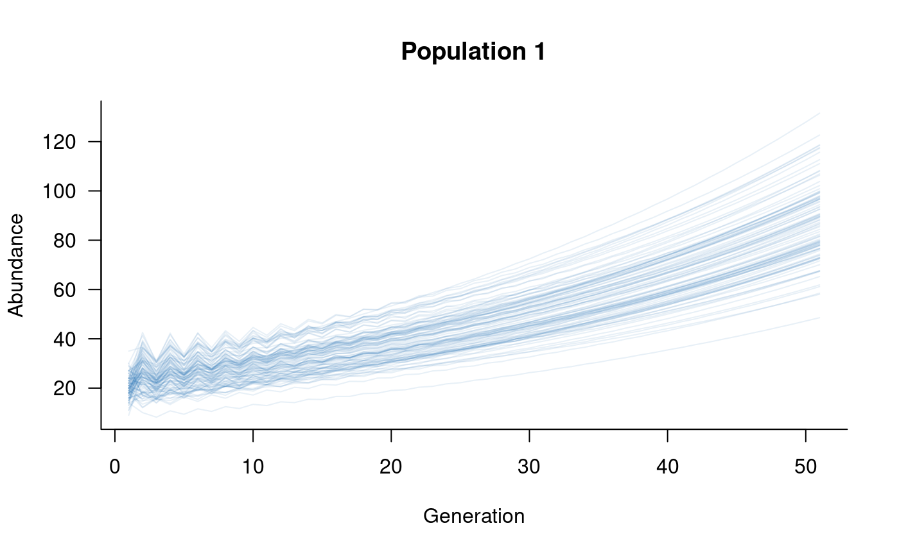
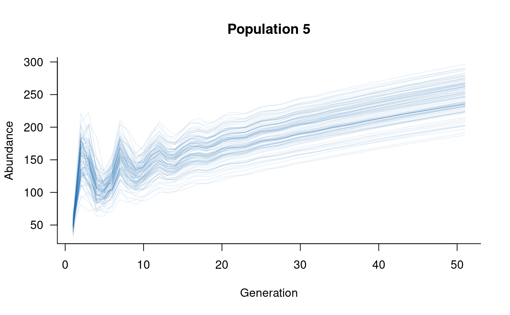
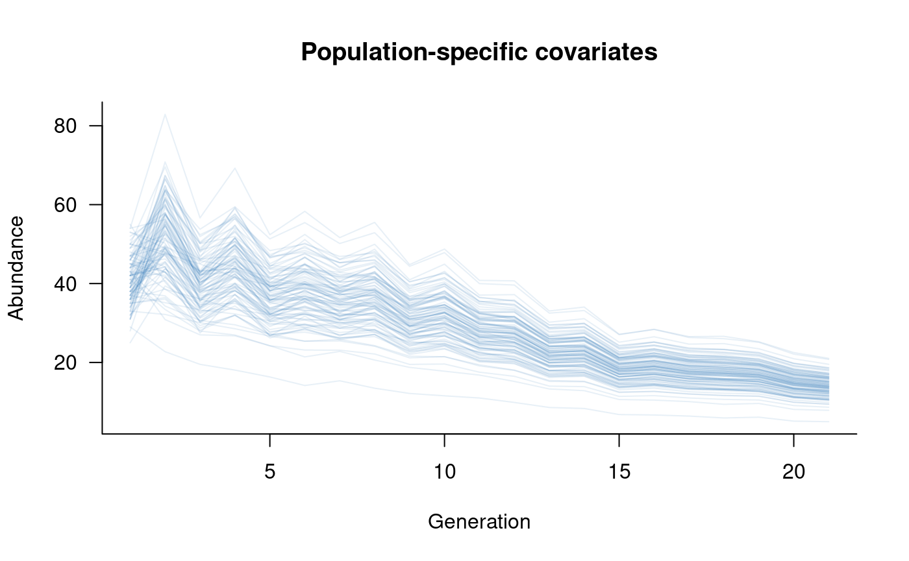
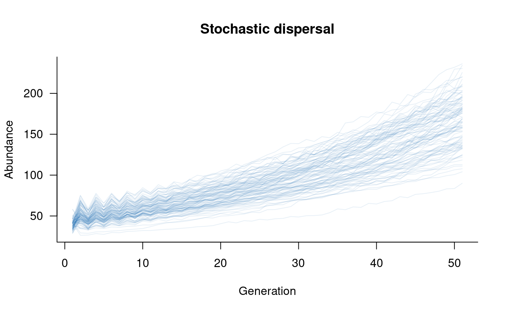
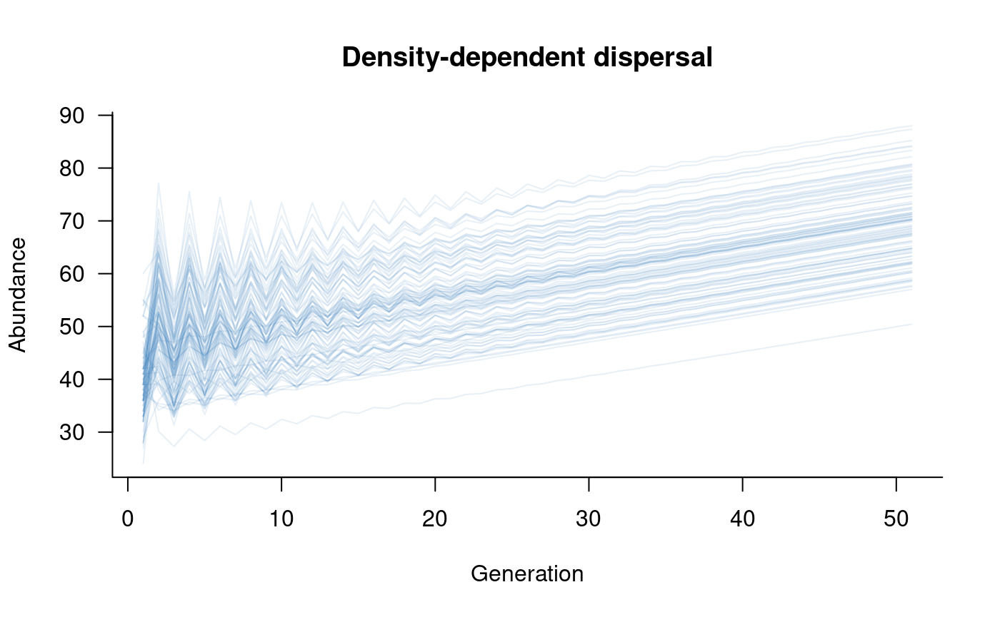

vignettes/metapopulations.Rmd
metapopulations.Rmdaae.pop has a built-in method to define a metapopulation
from multiple populations. This is based on the most-general definition
of a metapopulation: populations of the same species connected by
dispersal. Defining a metapopulation requires dynamics
objects for multiple populations, a structure that defines
movements between populations, and a dispersal object,
which is a new class of object used to specify in detail the movements
between populations.
This vignette introduces structure and
dispersal objects and explains how population processes
(e.g., demographic stochasticity) are handled in metapopulations.
Simulating metapopulation dynamics is very similar to the basic
simulate approach outlined in the Getting started vignette. The only
difference is that the population matrix has to be expanded to include
multiple populations and movements among these populations. This section
will start with a highly simplified example of a building a
metapopulation from scratch and will then introduce some methods in
aae.pop to streamline this process for more realistic
population models.
First, define a simplistic two-class model:
popmat_simple <- matrix(
c(
0, 2, # reproduction of 10 new individuals per adult (female)
0.45, 0.15 # move from class 1 to class 2 with 0.8 probability,
# survive in class 2 with 0.25 probability
),
nrow = 2,
byrow = TRUE
)If we assume there are two separate populations with same underlying
vital rates (defined in popmat_simple), it is possible to
build up a four-class model that has two classes from population 1 and
another two classes from population 2:
# setup a matrix with four classes and all elements equal to zero
metapop_simple <- matrix(0, nrow = 4, ncol = 4)
# fill the first population's vital rates
# (top two rows, two left-hand columns)
metapop_simple[1:2, 1:2] <- popmat_simple
# repeat for the second population, this time
# filling the bottom right square
metapop_simple[3:4, 3:4] <- popmat_simpleThis matrix defines transitions between all four classes (two classes
each in two populations), but currently keeps transitions within
populations. Following the columns move to rows rule of
aae.pop, the metapop_simple matrix defines
transitions from class 1 to class 2, class 2 to classes 1 and 2, class 3
to class 4, and class 4 to classes 3 and 4:
## [,1] [,2] [,3] [,4]
## [1,] 0.00 2.00 0.00 0.00
## [2,] 0.45 0.15 0.00 0.00
## [3,] 0.00 0.00 0.00 2.00
## [4,] 0.00 0.00 0.45 0.15Adding dispersal, or movement between the two populations, requires
transitions from class 1 or 2 to class 3 or 4, and vice versa. For
example, dispersal might be a feature of the second class only (adults),
in which case individuals would move between class 2 and class 4. These
movements will be defined by cells [2, 4] and
[4, 2] in metapop_simple:
# allow 30 % of surviving adults to move between populations
# (columns move to rows, so population 1 to 2 is in [4, 2] and
# population 2 to 1 is in [2, 4])
metapop_simple[4, 2] <- 0.3 * metapop_simple[2, 2]
metapop_simple[2, 4] <- 0.3 * metapop_simple[4, 4]
# this 30 % needs to be removed from the adults that survive
# and remain within the same population
metapop_simple[2, 2] <- metapop_simple[2, 2] - metapop_simple[4, 2]
metapop_simple[4, 4] <- metapop_simple[4, 4] - metapop_simple[2, 4]
# what happens if we simulate from this?
sims <- simulate(dynamics(metapop_simple), nsim = 100)
plot(sims, col = scales::alpha("#2171B5", 0.1))This plot sums over both populations, which is often of interest when
considering species- or metapopulation-level abundances.
aae.pop has a built-in subset method, which
means it’s possible to separate the two populations, recalling that
population 1 is classes 1 and 2 and population 2 is classes 3 and 4 in
the population vector:
pop1_sims <- subset(sims, 1:2)
pop2_sims <- subset(sims, 3:4)
plot(pop1_sims, col = scales::alpha("#2171B5", 0.1))This illustrates a highly simplified metapopulation model,
highlighting the main steps in its construction: define population
dynamics of each separate population, define dispersal among
populations, and account for the effects of dispersal on
within-population vital rates. The following sections outline how these
steps are generalised in aae.pop to deal with realistically
complex models.
The structure of a metapopulation defines how populations are
connected. Structure is captured in aae.pop by a matrix of
zeros and ones that denote links between two populations. This matrix
has one row and one column for each population, and follows the same
columns move to rows rule as the population matrix. For
example, a 1 in the second row, first column, indicates that individuals
from population 1 can move to population 2. A 1 in the first row, second
column denotes the reverse movement (population 2 to population 1).
For the simplistic example above, the structure would look like:
## [,1] [,2]
## [1,] 0 1
## [2,] 1 0This structure can be defined as:
Increasing the number of populations is a direct extension of this approach. With five populations all connected by dispersal, the structure would look like:
## [,1] [,2] [,3] [,4] [,5]
## [1,] 0 1 1 1 1
## [2,] 1 0 1 1 1
## [3,] 1 1 0 1 1
## [4,] 1 1 1 0 1
## [5,] 1 1 1 1 0A more realistic structure might consider five populations with only some of these possible connections, which might look like:
## [,1] [,2] [,3] [,4] [,5]
## [1,] 0 1 0 0 0
## [2,] 0 0 0 1 0
## [3,] 1 1 0 0 0
## [4,] 1 0 0 0 0
## [5,] 0 0 0 1 0In this example, individuals from population 1 move to populations 3 and 4, individuals from population 2 move to populations 1 and 3, and individuals from population 4 move to populations 2 and 5. Individuals from populations 3 and 5 never move to other populations.
Defining the structure of a metapopulation is the first step towards
simulating metapopulation dynamics. However, this definition of
structure is biologically vague. It specifies which populations are
connected and the direction of those connections, but doesn’t specify
which classes within populations are moving and how frequently.
dispersal objects specify the probability of a transition
between specific source and receiver classes, whether these transitions
are density dependent, and any stochasticity in the transitions.
dispersal objects are one-directional, which means a
separate dispersal object is required for each link in the
structure matrix.
Using the simplistic, two-class example, which had adults moving both
directions between the two populations, the dispersal
objects could be specified as:
kern <- matrix(c(0, 0, 0, 0.3), nrow = 2)
dispersal_simple <- dispersal(kernel = kern, proportion = TRUE)The kernel is a matrix with two rows and two columns,
and the 0.3 in the bottom-right corner specifies the 30 % of surviving
adults that move from one population to another. The argument
proportion determines whether this 30 % of moving
individuals is a proportion of all surviving adults or is an absolute
value. Setting proportion = TRUE addresses the situation
where the 30 % of moving adults are taken from the total pool of
surviving adults, thereby reducing the within-population survival by 30
%.
This setup is sufficient to specify a one-direction movement between
populations; an additional dispersal term is required to
specify the reverse transition. In aae.pop, these
dispersal terms can be combined in a list, stored in
column-major order following the metapopulation structure.
This means that one dispersal object must be provided for
each link in the structure, working through the columns
from left-to-right (i.e., all links in column 1, all links in column 2,
and so on). In this simplistic example, the same dispersal
term can be used for both links:
dispersal_simple <- list(dispersal_simple, dispersal_simple)This example presents a simplified dispersal setup.
aae.pop supports more complex features such as
stochasticity and density dependence in transitions. These two
extensions are discussed briefly below.
Together, popmat_simple, structure_simple,
and dispersal_simple are sufficient to characterise
metapopulation dynamics as in metapop_simple. The
metapopulation function ties these three elements
together:
# create a population dynamics object from the population matrix
dynamics_simple <- dynamics(popmat_simple)
# turn this into a metapopulation
metapopulation_simple <- metapopulation(
structure = structure_simple,
dynamics = list(dynamics_simple, dynamics_simple), # both populations have identical rates
dispersal = dispersal_simple
)The metapopulation defined by metapopulation_simple is
identical to that defined by metapop_simple, above:
all.equal(metapop_simple, metapopulation_simple$matrix)## [1] TRUEWith metapopulation_simple defined in this way,
simulating population dynamics is identical to any other population
model in aae.pop:
sims <- simulate(metapopulation_simple, nsim = 100)
plot(subset(sims, 1:2), col = scales::alpha("#2171B5", 0.1), main = "Population 1")
A more complicated metapopulation structure might consider the
population introduced in the Getting
started vignette, which had five age classes. Coupling this with the
five-population structure shown above demonstrates a more
realistic metapopulation. Note that specifying this metapopulation
manually would require a matrix with 25 rows and 25 columns, with each
dispersal and proportional change in survival calculated individually.
Using aae.pop still takes a few lines of code but many of
the calculations are now handled automatically:
# define population matrix
popmat <- rbind(
c(0, 0, 2, 4, 7), # reproduction from 3-5 year olds
c(0.25, 0, 0, 0, 0), # survival from age 1 to 2
c(0, 0.45, 0, 0, 0), # survival from age 2 to 3
c(0, 0, 0.70, 0, 0), # survival from age 3 to 4
c(0, 0, 0, 0.85, 0) # survival from age 4 to 5
)
# define metapopulation structure
mp_str <- matrix(0, nrow = 5, ncol = 5)
mp_str[1, 2] <- mp_str[3, 2] <- mp_str[5, 4] <- mp_str[4, 1] <- mp_str[3, 1] <- mp_str[2, 4] <- 1
# define dispersal, assume all dispersal links are the same
mp_kern <- matrix(0, nrow = 5, ncol = 5)
mp_kern[3, 4] <- mp_kern[4, 5] <- 0.2 # adults can move once per year with 20 % probability
mp_disp <- dispersal(kernel = mp_kern, proportion = TRUE)
# define metapopulation
mp <- metapopulation(
structure = mp_str,
dynamics = lapply(1:5, function(x) dynamics(popmat)), # five populations, all identical rates
dispersal = lapply(1:6, function(x) mp_disp) # six transitions in mp_str, all identical
)
# simulate
sims <- simulate(mp, nsim = 100)
# plot
plot(sims, col = scales::alpha("#2171B5", 0.1), main = "All populations")With five populations, each with five classes, the simulated values
now have 25 total classes. These are stored in order of the five
populations defined in the dynamics argument to
metapopulation, so classes 1 to 5 are the first population,
6 to 10 are the second population, and so on. These can be extracted and
plotted with the subset function:

These plots illustrate the effects of metapopulation dynamics: population 1 loses more individuals than it gains and is in decline, whereas population 5 only gains individuals and is on an upward trajectory as a result.
The metapopulation function preserves all
within-population processes, such as density dependence, environmental
and demographic stochasticity, and covariate effects (but see below for
one complication with covariates). The
processes operate within populations, so are largely separate from
dispersal. Dispersal itself can be subject to among-population density
dependence and stochasticity; this is described below.
Within-population processes are preserved using the same
mask/function approach used for demographic
processes, described in the Including
processes vignette. A set of masks is created for each population
(blocks on a block-diagonal matrix), and the functions
for each population are coupled with the appropriate mask. This is an
example of the flexibility of the
mask/function approach.
A by-product of this setup is that processes (with the exception of
dispersal) are assumed to be independent of all other populations. For
example, density dependence will consider the number of individuals
currently in a population but will not take into account the overall
metapopulation abundance. If this level of detail is required, the
metapopulation function could still be used to prepare the
metapopulation-level elements (e.g., the metapopulation matrix, process
functions), with additional processes added with metapopulation-level
masks and functions (e.g., a new call to
density_dependence).
The metapopulation function is designed to make
metapopulation dynamics as similar as possible to single-population
dynamics, which takes full advantage of the methods in
simulate for (relatively) fast and flexible models. One
complication is that simulate does not explicitly allow
separate covariate sequences for each population. This is a relatively
common scenario given that metapopulations typically span multiple
spatial locations, and this section illustrates a possible workaround.
An additional example of this approach is included in the
metapopulation documentation (accessible by typing
?metapopulation into the R console). A more elegant
solution is a focus for future development of aae.pop.
Using the simplified, two-population example above, this workaround
involves combining two sequences of covariates into a single
matrix (or data.frame), then subsetting this
combined matrix within the covariates
functions for each individual population.
# define two covariate sequences and combine them into a data.frame
covar_seq1 <- runif(20, min = 0.5, max = 1.0)
covar_seq2 <- runif(20, min = 0.75, max = 1.0)
covar_seq <- data.frame(pop1 = covar_seq1, pop2 = covar_seq2)
# define covariate responses for each population, pulling out
# the appropriate covariate sequence in each
covar_fn1 <- function(mat, x) {
mat * x$pop1
}
covar_fn2 <- function(mat, x) {
mat * x$pop2
}
# define the covariates object for each population
covar1 <- covariates(masks = transition(popmat_simple), funs = covar_fn1)
covar2 <- covariates(masks = transition(popmat_simple), funs = covar_fn2)
# create a population dynamics object for each population
dynamics_simple1 <- dynamics(popmat_simple, covar1)
dynamics_simple2 <- dynamics(popmat_simple, covar2)
# turn this into a metapopulation
metapopulation_simple <- metapopulation(
structure = structure_simple,
dynamics = list(dynamics_simple1, dynamics_simple2),
dispersal = dispersal_simple
)
# simulate
sims <- simulate(
metapopulation_simple,
nsim = 100,
args = list(covariates = format_covariates(covar_seq))
)
# plot
plot(sims, col = scales::alpha("#2171B5", 0.1), main = "Population-specific covariates")
This example uses a named data.frame to store the
covariate sequences for both populations but this approach could use any
number of covariates and any form of subsetting or indexing of
covariates within the covariate functions.
The dispersal function, used above to define
class-specific movements between two populations, also allows density
dependence and stochasticity in these movements. These two processes are
useful to account for scenarios where individual decisions to move
depend on the number of individuals in the source or receiving
population, and when outcomes of movement decisions are stochastic due
to, for example, mortality risk during movement. Specification of
density dependence and stochasticity in dispersal uses the same
mask/function approach demonstrated in the Including processes vignette.
It is highly likely that dispersal outcomes are stochastic due to
unpredictable movements by individuals and increased mortality during
and following dispersal. Stochasticity is supported in the definition of
dispersal objects with a
mask/function pair that identifies the
relevant classes and form of stochasticity. Extending the simplified
example from above, this might look like:
# define a mask that is TRUE whenever the dispersal kernel is non-zero
stoch_mask <- kern > 0
# define a stochastic dispersal function (small change in probability)
stoch_fun <- function(x) {
rmultiunit(length(x), mean = x, sd = 0.05)
}
# using the kernel defined earlier (30 % probability of adults moving)
dispersal_simple <- dispersal(
kernel = kern,
stochasticity_masks = stoch_mask,
stochasticity_funs = stoch_fun,
proportion = TRUE
)
# dispersal is one-directional, so need one dispersal object for each population
dispersal_simple <- list(dispersal_simple, dispersal_simple)
# define metapopulation using the dynamics and structure objects defined above
metapopulation_simple <- metapopulation(
structure = structure_simple,
dynamics = list(dynamics_simple, dynamics_simple),
dispersal = dispersal_simple
)
# simulate
sims <- simulate(metapopulation_simple, nsim = 100)
# plot
plot(sims, col = scales::alpha("#2171B5", 0.1), main = "Stochastic dispersal")
Density dependence might influence dispersal through individual
decisions to move or remain based on the number of individuals in the
current (source) or future (destination) population. More broadly, the
abundances of source or destination populations might influence survival
outcomes following dispersal due to levels of competition or other
density-dependent stressors (e.g., disease). These types of processes
can be included in a metapopulation model through the
density_masks and density_funs arguments to
dispersal.
The current implementation of density-dependent dispersal is linked
the entire metapopulation vector, so can depend on the abundances of any
or all of the sub-populations. The downside of this approach is that
indexing of this vector has to be done manually in the definition of
density_funs. This indexing depends on the order of
populations within the metapopulation (as defined by the
dynamics argument to metapopulation),
recalling that each population has one element for each class. An
example might illustrate the inclusion of density-dependent dispersal
most clearly:
# define a mask that is TRUE whenever the dispersal kernel is non-zero
# (this is the same as for stochasticity and this mask
# could be used for both)
dd_mask <- kern > 0
# define Ricker type density dependence based on the abundance in the
# destination population (recall n is a vector of two classes per
# population, so elements 1 and 2 are population 1 and elements
# 3 and 4 are population 2)
dd_fun1 <- function(x, n) {
# dispersing from population 1 to 2
x * exp(1 - sum(n[3:4]) / 20) / exp(1)
}
dd_fun2 <- function(x, n) {
# dispersing from population 2 to 1
x * exp(1 - sum(n[1:2]) / 20) / exp(1)
}
# using the kernel defined earlier (30 % of surviving adults moving),
# add density masks and functions for each population
dispersal_simple1 <- dispersal(
kernel = kern,
density_masks = dd_mask,
density_funs = dd_fun1,
proportion = TRUE
)
dispersal_simple2 <- dispersal(
kernel = kern,
density_masks = dd_mask,
density_funs = dd_fun2,
proportion = TRUE
)
# combine the dispersal objects for both populations
dispersal_simple <- list(dispersal_simple1, dispersal_simple2)
# define metapopulation using the dynamics and structure objects defined above
metapopulation_simple <- metapopulation(
structure = structure_simple,
dynamics = list(dynamics_simple, dynamics_simple),
dispersal = dispersal_simple
)
# simulate
sims <- simulate(metapopulation_simple, nsim = 100)
# plot
plot(sims, col = scales::alpha("#2171B5", 0.1), main = "Density-dependent dispersal")